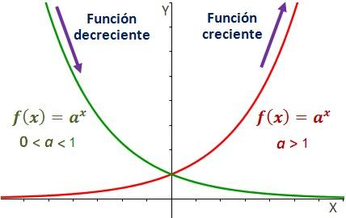

Definition 9. Una función es creciente en un intervalo si para cualesquiera y del intervalo tales que , se verifica que .
Si la desigualdad es estricta, es decir, si para cualesquiera
y
tales que
se verifica
que ,
la función es estrictamente creciente.

Definition 10. Una función es decreciente en un intervalo si para cualesquiera y del intervalo tales que , se verifica que .
Como en el caso anterior, si para cualesquiera
y
tales que
se verifica
que ,
la función es estrictamente decreciente.
Determina los intervalos de crecimiento y decrecimiento de la función
Determina los intervalos de crecimiento y decrecimiento de la función
Determina los intervalos de crecimiento y decrecimiento de la función
Determina los intervalos de crecimiento y decrecimiento de la función
Determina los intervalos de crecimiento y decrecimiento de la función
Trata de observar los intervalos de crecimiento y de crecimiento de las siguientes funciones ayudándote de la representación gráfica de las mismas:
true